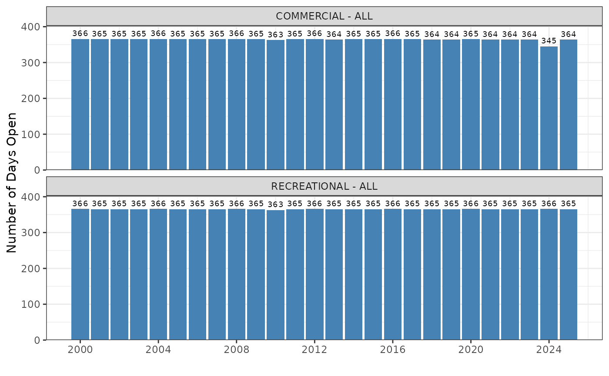
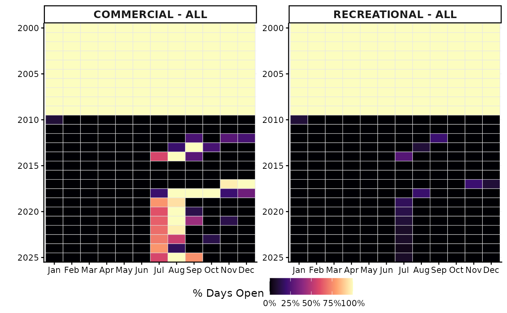
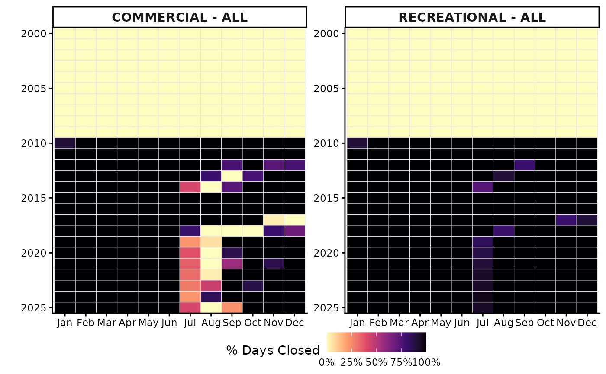

Process and connect all closure-related management types for a species within a region
Source:R/function-closures.R
process_closures.RdProcess closures to expand and incorporate all related mtypes for closures to know for a single day whether the fishery is open or closed.
Arguments
- data
A dataframe (default=fishhist).
- spp
Filter to species of interest (common name).
- region
Filter to region of interest.
- start
Process all closure-related management types starting from a defined start date (formatted using
as.Date).- end
Process all closure-related management types starting from a defined end date (formatted using
as.Date).
Value
A list containing 6 items:
data is the full closure dataset where each row represents a day within a time series. An additional field is added to indicate whether that day the fishery is OPEN or CLOSED.
tab_sum_days_open is a dataframe summarizing the number of days the fishery is open within a strata (year, region, zone, sector, subsector).
plot_days_open is a ggplot plot object of the number of days the fishery is open by year within a strata. The plot is faceted to show a plot for each zone and sector-subsector.
tab_fr_dateranges is a dataframe of the start and end date ranges for the open and closed seasons by region, zone, sector, subsector, management type, and FR citation.
heatmap_open is a ggplot object of the percent days open within a month and year (NOTE: this plot applies to zone ALL).
heatmap_closed is a ggplot object of the percent days closed within a month and year (NOTE: this plot applies to zone ALL).
The heatmap_open and heatmap_closed plots show the same information two different ways and color coding.
Examples
process_closures(fishhist,
spp = "SNAPPER, RED", region = "SOUTH ATLANTIC",
start = "2000-01-01", end = "2025-12-31"
)
#> $data
#> # A tibble: 146,558 × 11
#> FMP COMMON_NAME_CLEAN REGION ZONE_CLEAN SECTOR_CLEAN SUBSECTOR_CLEAN
#> <chr> <chr> <chr> <chr> <chr> <chr>
#> 1 SNAPPER-GRO… SNAPPER, RED SOUTH… ALL COMMERCIAL ALL
#> 2 SNAPPER-GRO… SNAPPER, RED SOUTH… ALL COMMERCIAL ALL
#> 3 SNAPPER-GRO… SNAPPER, RED SOUTH… ALL COMMERCIAL ALL
#> 4 SNAPPER-GRO… SNAPPER, RED SOUTH… ALL COMMERCIAL ALL
#> 5 SNAPPER-GRO… SNAPPER, RED SOUTH… ALL COMMERCIAL ALL
#> 6 SNAPPER-GRO… SNAPPER, RED SOUTH… ALL COMMERCIAL ALL
#> 7 SNAPPER-GRO… SNAPPER, RED SOUTH… ALL COMMERCIAL ALL
#> 8 SNAPPER-GRO… SNAPPER, RED SOUTH… ALL COMMERCIAL ALL
#> 9 SNAPPER-GRO… SNAPPER, RED SOUTH… ALL COMMERCIAL ALL
#> 10 SNAPPER-GRO… SNAPPER, RED SOUTH… ALL COMMERCIAL ALL
#> # ℹ 146,548 more rows
#> # ℹ 5 more variables: date_sequence <date>, MANAGEMENT_TYPECLEAN <chr>,
#> # FR_CITATION <chr>, TIME <chr>, VALUE <chr>
#>
#> $tab_sum_days_open
#> # A tibble: 46 × 8
#> FMP COMMON_NAME_CLEAN REGION ZONE_CLEAN SECTOR_CLEAN SUBSECTOR_CLEAN YEAR
#> <chr> <chr> <chr> <chr> <chr> <chr> <dbl>
#> 1 SNAPP… SNAPPER, RED SOUTH… ALL COMMERCIAL ALL 2000
#> 2 SNAPP… SNAPPER, RED SOUTH… ALL COMMERCIAL ALL 2001
#> 3 SNAPP… SNAPPER, RED SOUTH… ALL COMMERCIAL ALL 2002
#> 4 SNAPP… SNAPPER, RED SOUTH… ALL COMMERCIAL ALL 2003
#> 5 SNAPP… SNAPPER, RED SOUTH… ALL COMMERCIAL ALL 2004
#> 6 SNAPP… SNAPPER, RED SOUTH… ALL COMMERCIAL ALL 2005
#> 7 SNAPP… SNAPPER, RED SOUTH… ALL COMMERCIAL ALL 2006
#> 8 SNAPP… SNAPPER, RED SOUTH… ALL COMMERCIAL ALL 2007
#> 9 SNAPP… SNAPPER, RED SOUTH… ALL COMMERCIAL ALL 2008
#> 10 SNAPP… SNAPPER, RED SOUTH… ALL COMMERCIAL ALL 2009
#> # ℹ 36 more rows
#> # ℹ 1 more variable: Days_Open <int>
#>
#> $plot_days_open

#>
#> $tab_fr_dateranges
#> # A tibble: 116 × 11
#> FMP COMMON_NAME_CLEAN REGION ZONE_CLEAN SECTOR_CLEAN SUBSECTOR_CLEAN
#> <chr> <chr> <chr> <chr> <chr> <chr>
#> 1 SNAPPER-GRO… SNAPPER, RED SOUTH… ALL COMMERCIAL ALL
#> 2 SNAPPER-GRO… SNAPPER, RED SOUTH… ALL COMMERCIAL ALL
#> 3 SNAPPER-GRO… SNAPPER, RED SOUTH… ALL COMMERCIAL ALL
#> 4 SNAPPER-GRO… SNAPPER, RED SOUTH… ALL COMMERCIAL ALL
#> 5 SNAPPER-GRO… SNAPPER, RED SOUTH… ALL COMMERCIAL ALL
#> 6 SNAPPER-GRO… SNAPPER, RED SOUTH… ALL COMMERCIAL ALL
#> 7 SNAPPER-GRO… SNAPPER, RED SOUTH… ALL COMMERCIAL ALL
#> 8 SNAPPER-GRO… SNAPPER, RED SOUTH… ALL COMMERCIAL ALL
#> 9 SNAPPER-GRO… SNAPPER, RED SOUTH… ALL COMMERCIAL ALL
#> 10 SNAPPER-GRO… SNAPPER, RED SOUTH… ALL COMMERCIAL ALL
#> # ℹ 106 more rows
#> # ℹ 5 more variables: FR_CITATION <chr>, MANAGEMENT_TYPECLEAN <chr>,
#> # episode_id <int>, START <date>, END <date>
#>
#> $heatmap_open

#>
#> $heatmap_closed

#>